usethis::use_git()4 Code management
Chapter lead author: Koen Hufkens
4.1 Learning objectives
In this chapter you will learn how to manage your code with common version control tools, i.e., Git.
You will learn how to:
- Create a Git project (new or from a template)
- Track changes in your code project
- Collaborate with others
- Ensure reproducibility of your project by openly sharing your work and progress.
4.2 Tutorial
Code management is key for managing any data science project, especially when collaborating. Proper code management limits mistakes, such as code loss, and increases efficiency by structuring projects.
In this chapter, we will discuss the management of code in both the location sense, where things are kept, and tracking temporal changes over time using a version control system.
Current version control of code is dominated by the software tool Git. However, version control has a long history and can be found not only in code development practices. For example, whenever you use track changes in a text document, you apply a form of version control. That is, you track changes in your text over time and selectively accept changes. In this respect, Git, as a tool for version control of code, does not differ much from track changes of a text document. In contrast to track changes in a text document, with Git the user has manual control over staging and committing edits on a file.

Git allows for the collaboration of multiple contributors on the same code and manages the integration of contributions into the repository. Built upon Git are cloud-based platforms such as GitHub, GitLab, Codeberg, or Bitbucket which make these collaborative decisions and operations even easier.

In this chapter, you will learn how to use Git and GitHub to manage your project and collaborate on code.
NOTE: Coding style, and documentation practices of the code itself have been covered previously in Chapter 3. Although the tutorial below focuses on GitHub, the jargon and operations are transferable to other platforms such as GitLab and Codeberg.
4.2.1 Git and local version control
Git allows for the tracking of changes in code (or any file) within a git project. A Git project is defined by the topmost directory in which a Git project is created. For example, the following project is not tracked for changes using git.
project/
├─ YOUR_PROJECT.RprojYou can start tracking a project by initiating a local Git repository using the following code in R. We’ll use the {usethis} package to make some of the setup a project easier.
This will create a Git repository in your project. It will also create a .gitignore file which specifies which files NOT to track (even if asked to). In addition it will make an first commit.
4.2.1.1 git add
Before we can track anything, we need to tell Git which files to track. In Git-speak, we stage the files. We therefore have to add them to an index of tracked files. You can either do this on the command line using:
git add your_file.csvOr using the RStudio Git panel. In this panel, you will see all un-tracked files or directories highlighted with a yellow question mark.
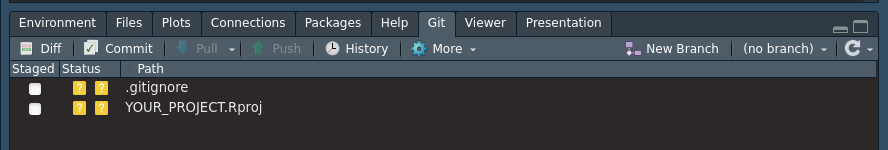
You select the file tick boxes to the left to stage all files for inclusion into the Git repository. Once staged, the next step will be to finally commit these staged files to be included in Git tracking.
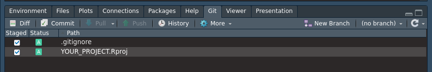
4.2.1.2 git commit
To store any changes to the files which were staged we need to commit these changes. We therefore hit the commit button. A new window will pop up.
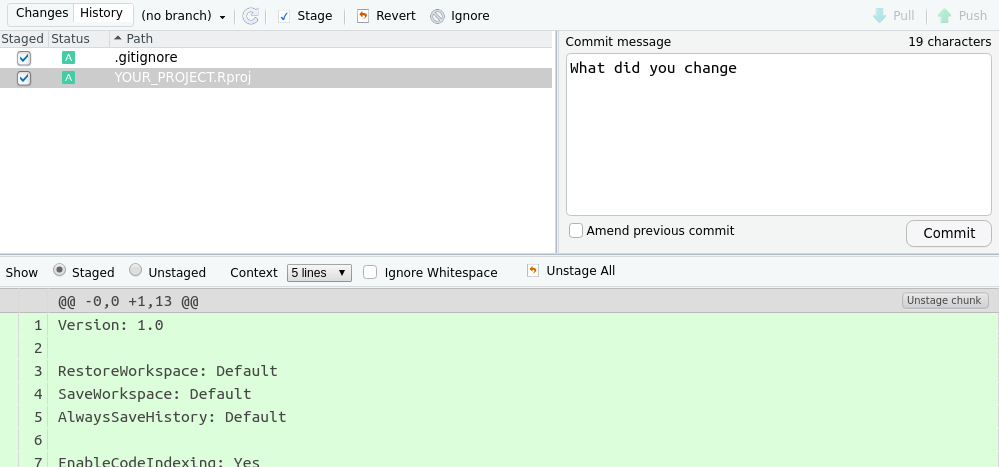
Each commit needs a brief message describing what you have included in the staged files, or the commit message, as shown in the panel on the right. You need to provide this small message before pressing the commit button once more. This will let Git track the changes to these files. A message will be shown if the commit is successful.
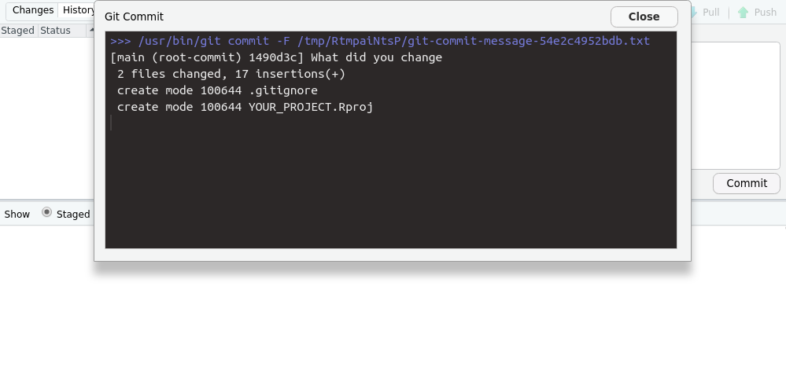
With this, you will track all files locally. Any new changes to a file will need to be committed to the Git repository once more. So, unlike cloud services such as Dropbox, your files are not automatically tracked. Instead, this is a manual step. As with normal documents, you are advised to save (commit) your changes to your project frequently. And remember, if you create a new file, you will need to add it before you can commit it.
You can commit changes of staged files using the command line as well using the following command.
git commit -m "A message""4.2.2 Remote version control
Keeping files and working with Git locally limit the extent in which you can collaborate with others. This is where remote cloud-based Git solutions, such as GitHub, GitLab and Codeberg, come in. They provide a cloud-based Git repository which you can associate with your local project (see figure above).
To create a remote project and successfully associate it with an R project, we first have to specify some details, such as the user name and email you used is singing up for GitHub. To not leave your R session, you can use the {usethis} package for this.
# Configure your project
library(usethis)
usethis::use_git_config(user.name = "Jane Doe",
user.email = "jane@example.org")For security reasons, the use of your GitHub password is not allowed in remote actions. You therefore need to generate a personal access token (PAT) which can be restricted in time and functionality. To proceed, first generate a GitHub PAT using these instructions.
To create a new project on GitHub, hit the “+” sign top left on the GitHub main page (once logged in), and select the “new repository” from the dropdown menu.
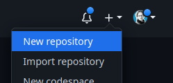
A new interface will open up in which you should not use any template, but specify your own project name and brief description. Make sure your project is public, and all other settings are kept as is before you hit the “Create repository” button.
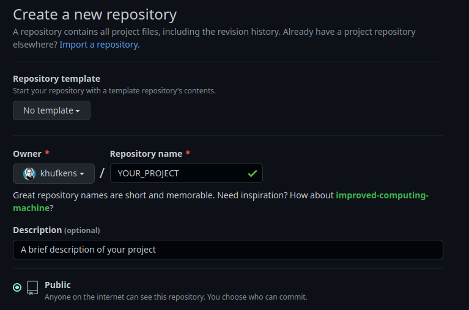
Note the URL that is generated for your project. You will need it when creating a new RStudio project linked to GitHub.
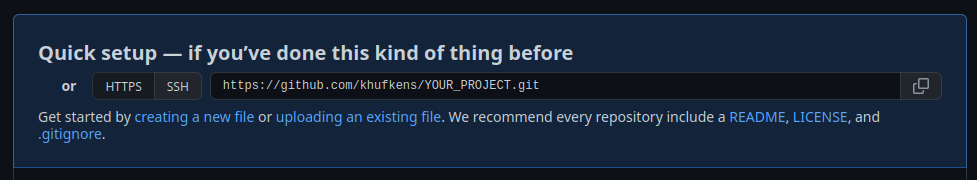
Next, we’ll setup an R project which is associated with the repository. Use: File > New Project > Version Control > Git.
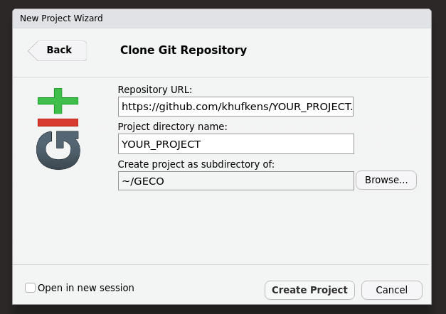
In the “repository URL”, paste the URL of your new GitHub repository. In the example above, this would be https://github.com/khufkens/YOUR_PROJECT.git. Select a location where to store the project, select the “Open in new session” option and click “Create Project”. A window will pop up, asking for your GitHub username and a password. This password is not your GitHub login password but the PAT described above. After entering your credential, RStudio creates a \*.Proj file as well as a .gitignore file. You can add both files as you would otherwise (see Section 4.2.1.1, and these files are tracked locally.
4.2.2.1 git push
Once a remote git service has been configured, you can push your local Git repository to this remote repository, i.e. syncing both. You can use both the push buttons in the RStudio panel for this or the command line using git push. At the end of a day or a session, it is always advised to push your changes to your remote repository to store any changes.
NOTE: Syncing between GitHub and your local repository is a manual task. If not performed the repository, it will not be synced. To retain all your changes, sync both repositories often!

4.2.2.2 git pull and merge conflicts
git pull compares your local Git repository with the remote one and integrates the more recent changes if there are any. Note that if you make changes on the same line in file on both sides, i.e., in the remote (e.g., by another person) and in the local repository at the same time, you will generate a merge conflict. A merge conflict states that the remote and local changes can’t be reconciled without supervised intervention on your part. Changes will be made to your local repository, but the files will include the below syntax for highlighting conflicting differences.
<<<<<<<<<<
Edited line from remote
==========
Edited same line locally
>>>>>>>>>>You will need to remove the <<<, === and >>> brackets and retain the changes you want to keep for resolving the conflict. Then, commit the changes again.
4.2.2.3 git clone
You can create a local copy of your remote repository that’s hosted on GitHub using the git clone command. For example, on the command line, you can use:
# create a local copy of the remote github repository
git clone git@github.com:khufkens/YOUR_PROJECT.gitYou can then start working on this repository by using the modify -> staged -> commit -> push workflow.
4.2.2.4 git fork and pull request
You can also create a copy of any public GitHub project from into your own GitHub account by creating a fork. You can create a fork of a project by clicking the fork button top right on any public GitHub project page. The number of forks of a project is displayed next to the button. In case of the {rpmodel} package there are currently 24 forks of the project.
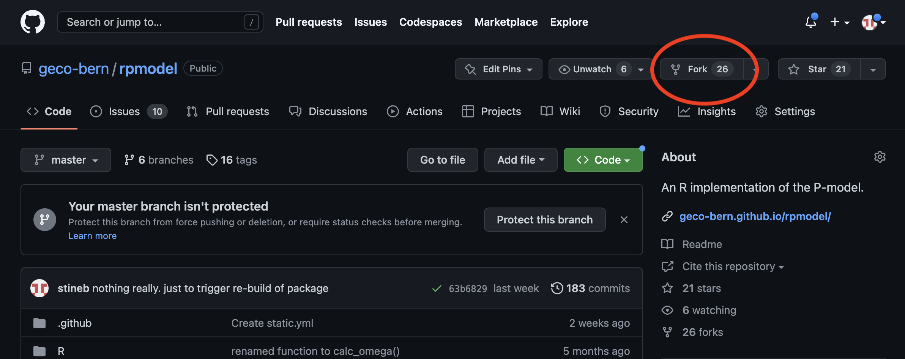
You can give the forked project a new name and description if so desired.
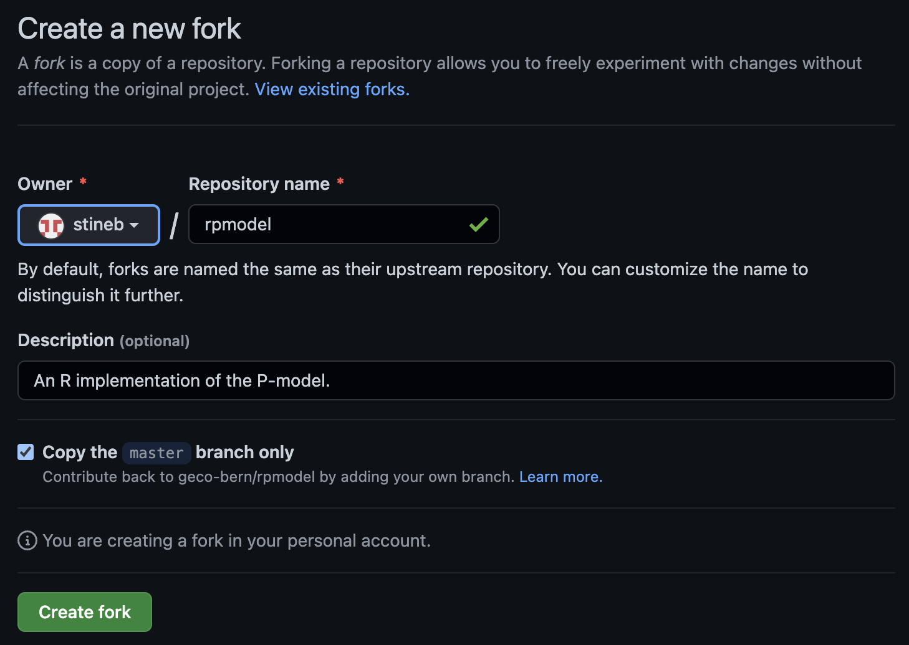
A fork allows you to experiment with the code stored in the original project without affecting the original repository. However, the relation to the original project is maintained. If you want to contribute changes to the original project you can do so with a pull request.
NOTE: To make changes to a forked project, you will first have to
cloneit to your local system. See workflow above.
In a forked project, go to the Pull requests tab and click the green New pull request button. You will then have to provide a description of the changes you made. This information will be forwarded to the original owner of the project, who can accept these changes and accept the pull request and “pull” in the changes.
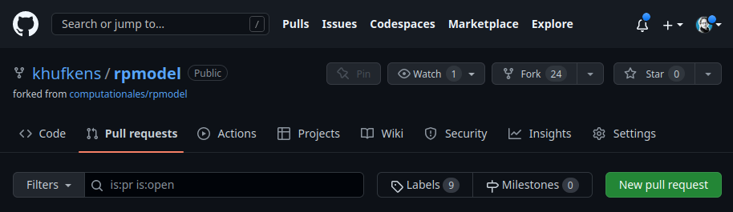
4.2.3 Location based code management - github templates
Both code (and data) management require you to be conscientious about where you store your code (and data). Structuring your projects using the same template will allow you to understand where all pieces of an an analysis are stored. This has been mentioned in Chapter 5.
In our R project template, we provide a project structure for both data and code which removes the mental overhead of structuring data projects. This project structure sorts code, data and reporting in a consistent way.
You can use the template in combination with a GitHub-based version control approach to manage your projects. Simply create a new project from this template and clone the project to your local computer. Any changes to the project can be tracked by the workflows described above.
To use the template, create a new repository on GitHub, as you otherwise would using the big green button. If you are in the project on GitHub, you can hit the green button top right (Use this template).
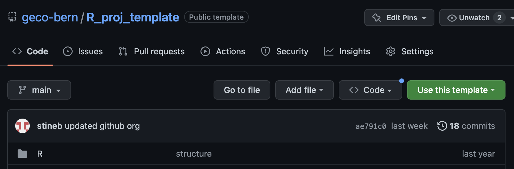
Otherwise, you can select the repository from the template dropdown menu, select geco-bern/R-project-template.
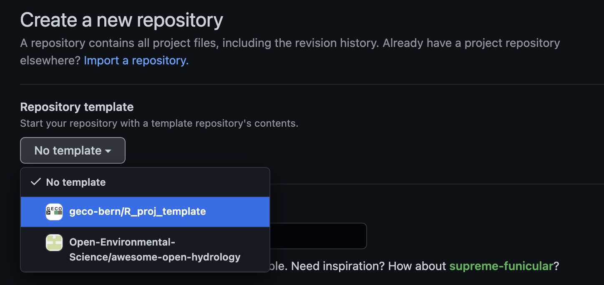
Proceed as usual by naming your repository. However, be careful to select the correct owner of the project if you have multiple identities. Rename the default .Proj file.

You can now clone the project to your local computer and continue to populate it with code and data.
4.3 Preparations for this course
4.3.0.1 Set up Git in RStudio
In this section, you will install Git, create a GitHub account and connect it to RStudio. This should set up your laptop so that you can do version control of your code (with an easy to use interface) and upload changes to an online copy of your R project (on GitHub) directly from RStudio. Follow these instructions:
- If you don’t have one already, create a GitHub account on https://github.com and sign in. We encourage you to use a personal email (not your student email) so you can keep using this account for years to come, thus compiling your “code knowledge base”.
- Next, follow the Git download and installation instructions for your OS outlined here.
- Once Git is installed, reboot RStudio. Set up RStudio for version control by going to Tools > Global Options > Git/SVN and tick “Enable version control interface…”. The path to your Git installation should be correct automatically.
- If it says “(Not Found)”, try the following:
- For Windows, it’s probably
C:\\Program Files\\Git\\bin\\git.exe. - For MacOS and Linux, you can type
which gitin the Terminal and it will show the installation location. - If you get an error after trying this, ask the teaching assistance.
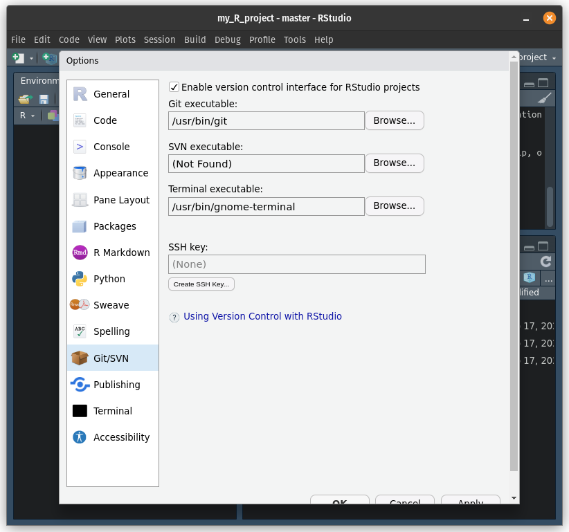
- For Windows, it’s probably
- If it says “(Not Found)”, try the following:
- Connect your GitHub account with Git locally, using SSH keys (which are cryptographic authentication credentials). You can do this from RStudio following the steps:
- Go to Tools > Global Options > Git/SVN and select Create SSH Key…. Create an SSH key with the default options (you can ignore the passphrase and click “Create”). This will create a new SSH in your default
~/.sshfolder.
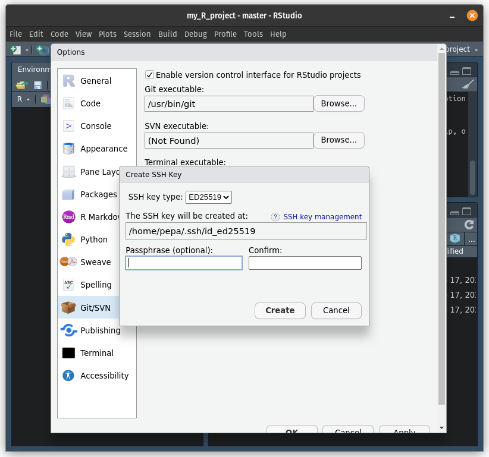 - Next, click on View public key (above your new SSH key) and copy the public key (all the text). 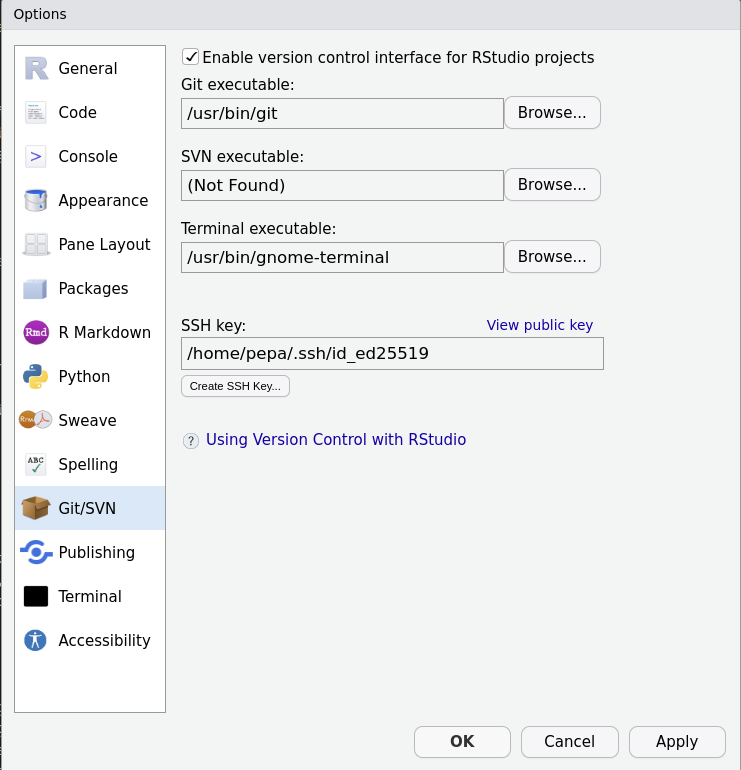
- Go back to your browser and open your GitHub account. At the top right, open your profile’s menu and choose Settings > SSH and GPG Keys. Then select Add new SSH key. Give your SSH connection a name, for example “My laptop” and paste the public key that you copied from RStudio. If you have problems, check out these instructions to add a new SSH key to your GitHub account.
- Finally, you can test your SSH connection following these instructions. Note that, at the top of these websites, there’s an option to choose your OS because the steps vary depending on the type of computer your work with.
- Go to Tools > Global Options > Git/SVN and select Create SSH Key…. Create an SSH key with the default options (you can ignore the passphrase and click “Create”). This will create a new SSH in your default
4.3.0.2 Host reports on Github
Your performance assessment for Applied Geodata Science will be in the form of a report. You will approach the writing of this report as if you were working on a clean, structured and reproducible data science project. This section is meant to guide you through the preparation of your report workspace, such that it’s in the form that you will submit it. Following the next steps, you will set up a git repository containing an R project and an R Markdown file.
- Log into GitHub in your browser and create a new repository. Name it agds_report_yourname, give it a short description and set it to be public, so we can read it for the evaluation. Include a README file (it’s a sort of menu which you’ll edit later), a
.gitignoretemplate for R (select in the drop-down menu) and a Creative Commons license (for code sharing rights, etc).
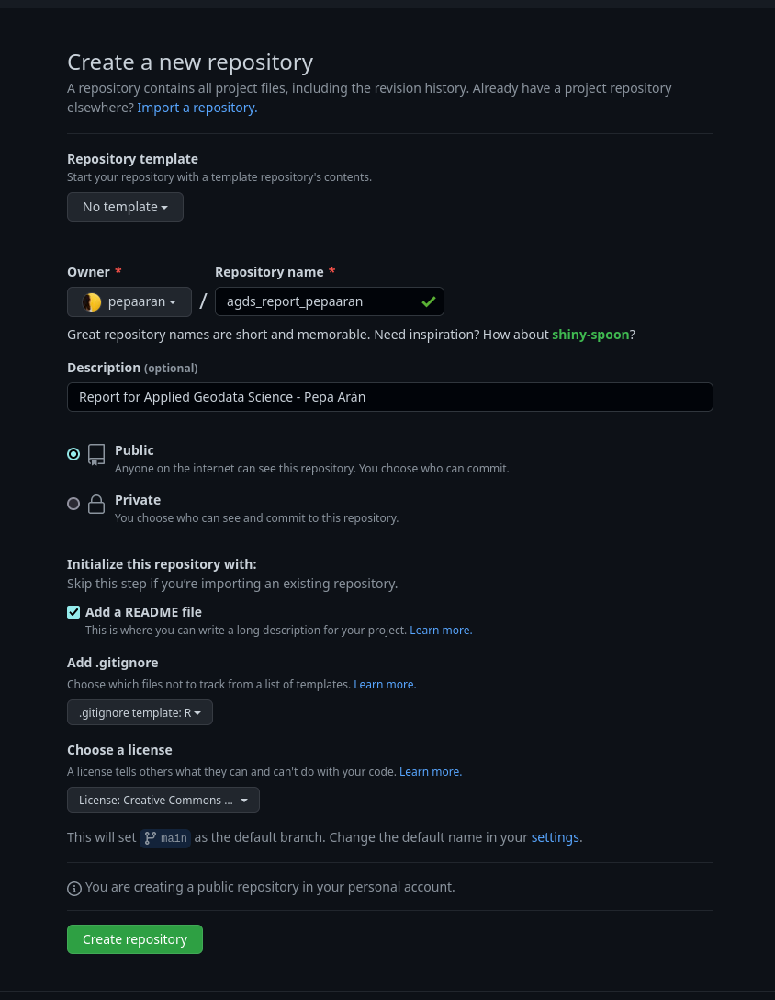 - Now that you have a GitHub repository, open it and you should see a green button saying Code. Go to SSH and copy that url. You will use it to clone the repository.
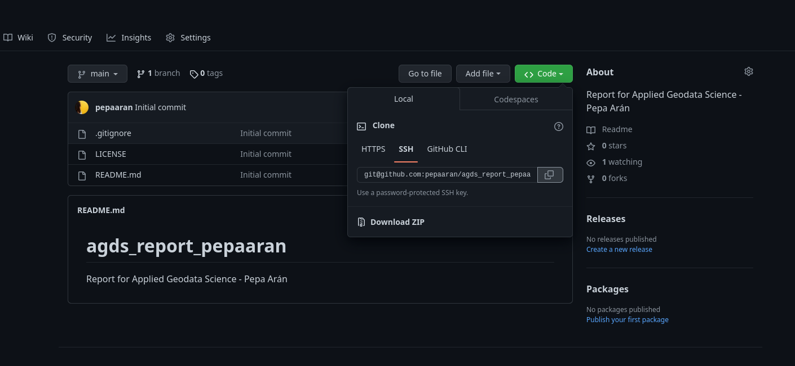 - Open RStudio. Create a new R project (opening the New Project dialog) from a GitHub repository. Paste the repository’s url, give it a name (by default the same as the repository) and select in which folder you want to keep it locally (for example the base directory
~). This will clone all the files from GitHub onto the project directory (i.e. folder) in your computer.
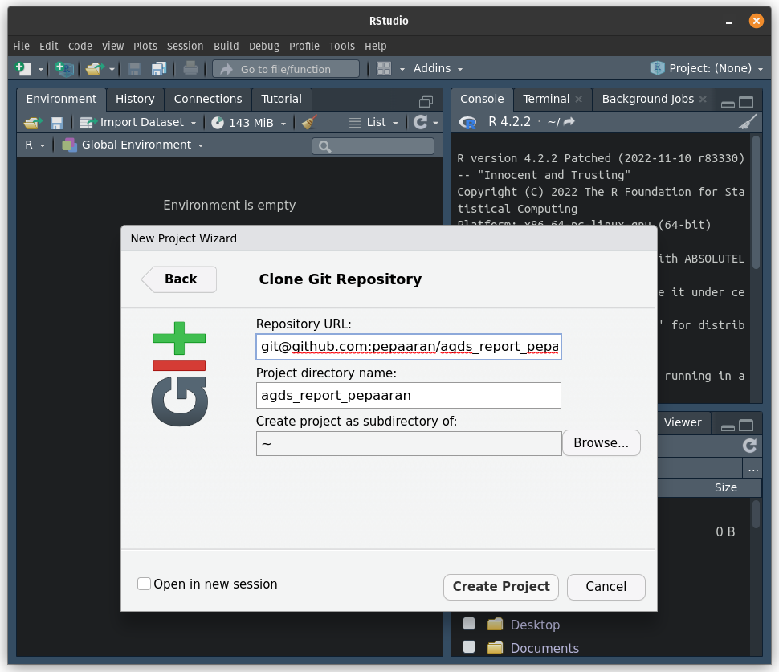 - With this, you’re set up. If your R project
agds_report_yournameis open, you should see a Git panel in RStudio (next to Environment) and also be able to use Git in the Terminal panel in RStudio. As mentioned above, we will start working with these tools in a few weeks and they will be a crucial part of the course. - You’ll see a detailed explanation of the Git workflows in Chapter 4. For now, add your solutions to each report exercise into a separate RMarkdown file, placed in a subdirectory named
./vignettes/. The first Report Exercise will be the one for Chapter 7 where you will be asked to implement your solutions in a file calledre_tidy.Rmd. At that stage, your repository should look like this:
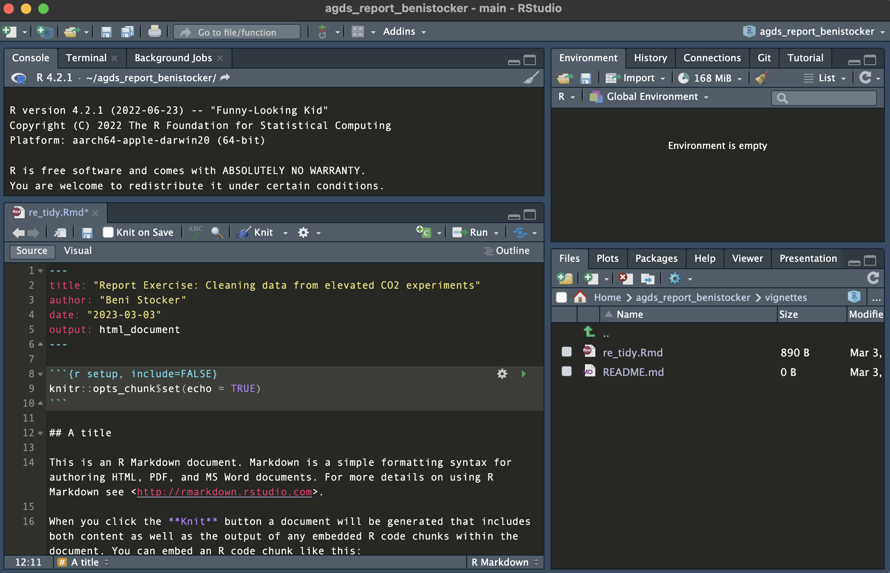
In total you should have two R projects related to this course: a local project containing solutions to general exercises (for yourself, created in the exercises below) and the report project + git repository (that you just created and will share with us at the end of the course). Your report project should not include the solutions to general exercises.
4.4 Exercises
Location based code management
Create a new R project using the Git R project template shown above.
Make some changes to the README.md
Put a small data set in the appropriate directory.
Make sure that both local and remote repositories (projects) are synced.
4.5 Report Exercises
Collaborative Work on Github
This is a team exercise, so team up with someone else in the classroom. You will learn about how to collaborate online using Git and Github.
Important: When creating your repositories, make sure that you set the repository to be public and not private.
Person 1 - Create a new repository (can be the same as you created following the tutorial but should no be the same as the one where you hand in your report)
Person 2 - Fork the GitHub project that Person 1 created in Step 1.
Person 2 - Create a new code file in the forked project and add some code.
Person 2 - Commit (with a helpful commit message) and push these changes to the forked project. Create a pull request (PR) to the original project of Person 1, specifying in a message what it contributes to Person 1’s project. Write a clear and polite message, imagining that Person 1 doesn’t know you have been working on improving their code.
Person 1 - Review the pull request from Person 2. Provide some comments or thank Person 1, accept the pull request, thereby letting the new code by Person 2 be integrated into the project.
Person 1 - Add a new file to your own project and add some code. Update the GitHub project.
Person 2 - Sync your forked project to integrate these last changes made by Person 1 into your own repository.
Important: To complete the exercise, reverse roles between Person 1 and Person 2 and redo the steps with a new repository.
- Voluntary: Can you force a merge conflict, for example by editing the same file at the same time, and resolve?
Deliverables for the report
This pair-coding exercise is part of your final performance assessment. We will check each repositories’ commit history to see whether this pair-coding exercise was done correctly. So, follow the steps above precisely!
When you submit your report by mail at the end of the course, you have to provide the links: a) to your repository on GitHub that holds all other report exercises, and b) to the two pull requests (one from you, one from your partner) that you created during this pair-coding work exercise. Alternatively you can also create a ./vignettes/re_paircoding.Rmd in your report repository, where you provide these links.